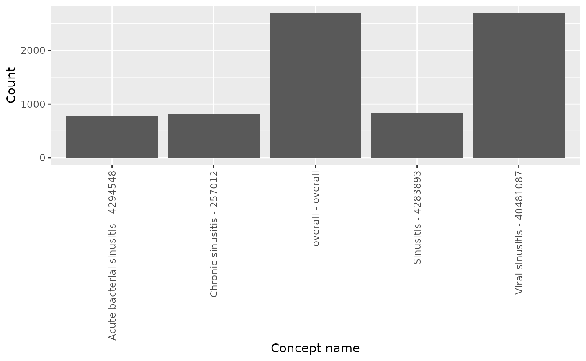
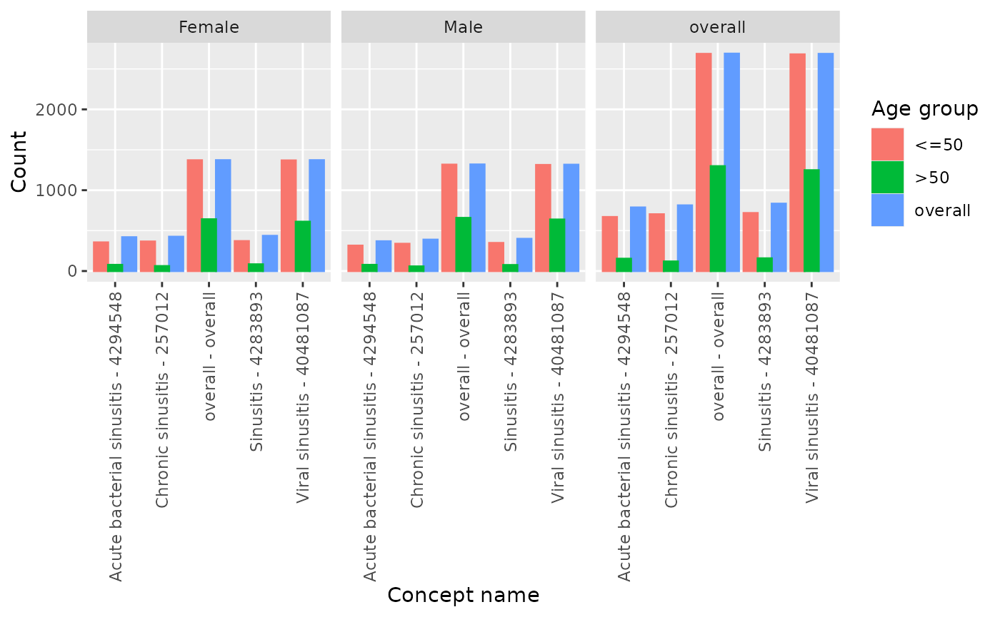

Summarise concept counts
Source:vignettes/B-summarise_concept_counts.Rmd
B-summarise_concept_counts.RmdIntroduction
In this vignette, we will explore the OmopSketch functions
designed to provide information about the number of counts of specific
concepts. Specifically, there are two key functions that facilitate
this, summariseConceptCounts() and
plotConceptCounts(). The former one creates a summary
statistics results with the number of counts per each concept, and the
latter one creates a histogram plot.
Create a mock cdm
Let’s see an example of the previous functions. To start with, we will load essential packages and create a mock cdm using Eunomia database.
library(dplyr)
#>
#> Attaching package: 'dplyr'
#> The following objects are masked from 'package:stats':
#>
#> filter, lag
#> The following objects are masked from 'package:base':
#>
#> intersect, setdiff, setequal, union
library(CDMConnector)
library(DBI)
library(duckdb)
library(OmopSketch)
library(CodelistGenerator)
# Connect to Eunomia database
con <- DBI::dbConnect(duckdb::duckdb(), CDMConnector::eunomia_dir())
#> Creating CDM database /tmp/RtmpOJHyX5/GiBleed_5.3.zip
cdm <- CDMConnector::cdmFromCon(
con = con, cdmSchema = "main", writeSchema = "main"
)
#> Note: method with signature 'DBIConnection#Id' chosen for function 'dbExistsTable',
#> target signature 'duckdb_connection#Id'.
#> "duckdb_connection#ANY" would also be valid
cdm
#>
#> ── # OMOP CDM reference (duckdb) of Synthea synthetic health database ──────────
#> • omop tables: person, observation_period, visit_occurrence, visit_detail,
#> condition_occurrence, drug_exposure, procedure_occurrence, device_exposure,
#> measurement, observation, death, note, note_nlp, specimen, fact_relationship,
#> location, care_site, provider, payer_plan_period, cost, drug_era, dose_era,
#> condition_era, metadata, cdm_source, concept, vocabulary, domain,
#> concept_class, concept_relationship, relationship, concept_synonym,
#> concept_ancestor, source_to_concept_map, drug_strength
#> • cohort tables: -
#> • achilles tables: -
#> • other tables: -Summarise concept counts
First, let’s generate a list of codes for the concept
dementia using CodelistGenerator
package.
acetaminophen <- getCandidateCodes(
cdm = cdm,
keywords = "acetaminophen",
domains = "Drug",
includeDescendants = TRUE
) |>
dplyr::pull("concept_id")
#> Limiting to domains of interest
#> Getting concepts to include
#> Adding descendants
#> Search completed. Finishing up.
#> ✔ 7 candidate concepts identified
#>
#> Time taken: 0 minutes and 0 seconds
sinusitis <- getCandidateCodes(
cdm = cdm,
keywords = "sinusitis",
domains = "Condition",
includeDescendants = TRUE
) |>
dplyr::pull("concept_id")
#> Limiting to domains of interest
#> Getting concepts to include
#> Adding descendants
#> Search completed. Finishing up.
#> ✔ 4 candidate concepts identified
#>
#> Time taken: 0 minutes and 0 secondsNow we want to explore the occurrence of these concepts within the
database. For that, we can use summariseConceptCounts()
from OmopSketch:
summariseConceptCounts(cdm,
conceptId = list("acetaminophen" = acetaminophen,
"sinusitis" = sinusitis)) |>
select(group_level, variable_name, variable_level, estimate_name, estimate_value) |>
glimpse()
#> ℹ Getting concept counts of acetaminophen
#> Getting use of codes ■■■■■■■■■■■■■■■■ 50% | ETA: 3s
#> ℹ Getting concept counts of sinusitis
#> Getting use of codes ■■■■■■■■■■■■■■■■ 50% | ETA: 3sGetting use of codes ■■■■■■■■■■■■■■■■■■■■■■■■■■■■■■■ 100% | ETA: 0s
#> Rows: 2,160
#> Columns: 5
#> $ group_level <chr> "acetaminophen", "acetaminophen", "acetaminophen", "ace…
#> $ variable_name <chr> "Number records", "Number subjects", "Number records", …
#> $ variable_level <chr> "overall", "overall", "1909-01-01 to 1909-12-31", "1909…
#> $ estimate_name <chr> "count", "count", "count", "count", "count", "count", "…
#> $ estimate_value <chr> "14205", "2679", "1", "1", "1", "1", "1", "1", "4", "4"…By default, the function will provide information about either the
number of records (estimate_name == "record_count") for
each concept_id or the number of people
(estimate_name == "person_count"):
summariseConceptCounts(cdm,
conceptId = list("acetaminophen" = acetaminophen,
"sinusitis" = sinusitis),
countBy = c("record","person")) |>
select(group_level, variable_name, estimate_name) |>
distinct() |>
arrange(group_level, variable_name)
#> ℹ Getting concept counts of acetaminophen
#> Getting use of codes ■■■■■■■■■■■■■■■■ 50% | ETA: 2s
#> ℹ Getting concept counts of sinusitis
#> Getting use of codes ■■■■■■■■■■■■■■■■ 50% | ETA: 2sGetting use of codes ■■■■■■■■■■■■■■■■■■■■■■■■■■■■■■■ 100% | ETA: 0s
#> # A tibble: 4 × 3
#> group_level variable_name estimate_name
#> <chr> <chr> <chr>
#> 1 acetaminophen Number records count
#> 2 acetaminophen Number subjects count
#> 3 sinusitis Number records count
#> 4 sinusitis Number subjects countHowever, we can specify which one is of interest using
countBy argument:
summariseConceptCounts(cdm,
conceptId = list("acetaminophen" = acetaminophen,
"sinusitis" = sinusitis),
countBy = "record") |>
select(group_level, variable_name, estimate_name) |>
distinct() |>
arrange(group_level, variable_name)
#> ℹ Getting concept counts of acetaminophen
#> Getting use of codes ■■■■■■■■■■■■■■■■ 50% | ETA: 2s
#> ℹ Getting concept counts of sinusitis
#> Getting use of codes ■■■■■■■■■■■■■■■■ 50% | ETA: 2sGetting use of codes ■■■■■■■■■■■■■■■■■■■■■■■■■■■■■■■ 100% | ETA: 0s
#> # A tibble: 2 × 3
#> group_level variable_name estimate_name
#> <chr> <chr> <chr>
#> 1 acetaminophen Number records count
#> 2 sinusitis Number records countOne can further stratify by year, sex or age group using the
year, sex, and ageGroup
arguments.
summariseConceptCounts(cdm,
conceptId = list("acetaminophen" = acetaminophen,
"sinusitis" = sinusitis),
countBy = "person",
interval = "year", unitInterval = 10,
sex = TRUE,
ageGroup = list("<=50" = c(0,50), ">50" = c(51,Inf))) |>
select(group_level, strata_level, variable_name, estimate_name) |> glimpse()
#> ℹ Getting concept counts of acetaminophen
#> Getting use of codes ■■■■■■■■■■■■■■■■ 50% | ETA: 3s
#> ℹ Getting concept counts of sinusitis
#> Getting use of codes ■■■■■■■■■■■■■■■■ 50% | ETA: 3sGetting use of codes ■■■■■■■■■■■■■■■■■■■■■■■■■■■■■■■ 100% | ETA: 0s
#> Rows: 1,067
#> Columns: 4
#> $ group_level <chr> "acetaminophen", "acetaminophen", "acetaminophen", "acet…
#> $ strata_level <chr> "overall", "<=50", ">50", "Female", "Male", "overall", "…
#> $ variable_name <chr> "Number subjects", "Number subjects", "Number subjects",…
#> $ estimate_name <chr> "count", "count", "count", "count", "count", "count", "c…Visualise the results
Finally, we can visualise the concept counts using
plotRecordCounts().
summariseConceptCounts(cdm,
conceptId = list("sinusitis" = sinusitis),
countBy = "person") |>
plotConceptCounts()
#> ℹ Getting concept counts of sinusitis Notice that either person counts or record counts can be plotted. If
both have been included in the summarised result, you will have to
filter to only include one variable at time:
Notice that either person counts or record counts can be plotted. If
both have been included in the summarised result, you will have to
filter to only include one variable at time:
summariseConceptCounts(cdm,
conceptId = list("sinusitis" = sinusitis),
countBy = c("person","record")) |>
filter(variable_name == "Number subjects") |>
plotConceptCounts()
#> ℹ Getting concept counts of sinusitis
Additionally, if results were stratified by year, sex or age group,
we can further use facet or colour arguments
to highlight the different results in the plot. To help us identify by
which variables we can colour or facet by, we can use visOmopResult
package.
summariseConceptCounts(cdm,
conceptId = list("sinusitis" = sinusitis),
countBy = c("person"),
sex = TRUE,
ageGroup = list("<=50" = c(0,50), ">50" = c(51, Inf))) |>
visOmopResults::tidyColumns()
#> ℹ Getting concept counts of sinusitis
#> [1] "cdm_name" "codelist_name" "age_group"
#> [4] "sex" "variable_name" "variable_level"
#> [7] "count" "standard_concept_name" "standard_concept_id"
#> [10] "source_concept_name" "source_concept_id" "domain_id"
#> [13] "result_type" "package_name" "package_version"
#> [16] "interval" "unitInterval"
summariseConceptCounts(cdm,
conceptId = list("sinusitis" = sinusitis),
countBy = c("person"),
sex = TRUE,
ageGroup = list("<=50" = c(0,50), ">50" = c(51, Inf)))|>
plotConceptCounts(facet = "sex", colour = "age_group")
#> ℹ Getting concept counts of sinusitis